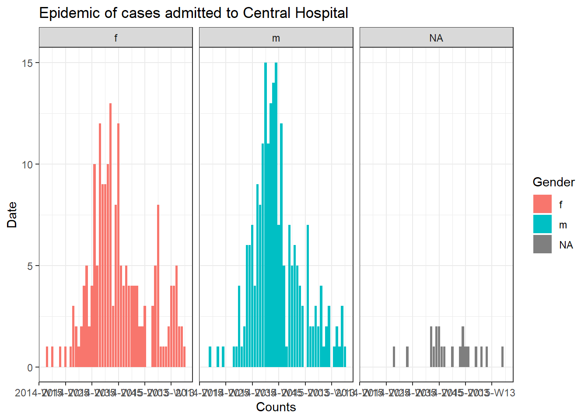
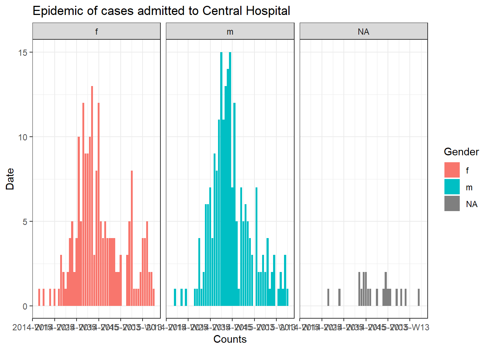

15 Itération, boucles et listes
Les épidémiologistes sont souvent confrontés à la répétition d’analyses sur des sous-groupes tels que des pays, des districts ou des groupes d’âge. Ce ne sont là que quelques-unes des nombreuses situations impliquant l’itération. Le codage de vos opérations itératives à l’aide des approches ci-dessous vous aidera à effectuer ces tâches répétitives plus rapidement, à réduire les risques d’erreur et à réduire la longueur du code.
Cette page présente deux approches des opérations itératives : l’utilisation de boucles for et l’utilisation du package purrr.
- Les boucles for permettent d’itérer le code sur une série d’entrées, mais sont moins courantes en R que dans d’autres langages de programmation. Néanmoins, nous les introduisons ici en tant qu’outil d’apprentissage et de référence.
- Le paquet purrr est l’approche tidyverse des opérations itératives - il fonctionne en “mappant” une fonction sur plusieurs entrées (valeurs, colonnes, ensembles de données, etc.).
En cours de route, nous montrerons des exemples tels que :
- L’importation et l’exportation de plusieurs fichiers
- Création d’épicurves pour plusieurs juridictions
- Exécution de tests T pour plusieurs colonnes dans un cadre de données.
Dans la section purrr section, nous fournirons également plusieurs exemples de création et de manipulation de listes.
15.1 Préparation
Chargement des paquets
Ce morceau de code montre le chargement des paquets nécessaires aux analyses. Dans ce manuel, nous mettons l’accent sur p_load() de pacman, qui installe le paquet si nécessaire et le charge pour l’utiliser. Vous pouvez également charger les paquets installés avec library() de base R. Voir la page sur bases de R pour plus d’informations sur les paquets R.
pacman::p_load(
rio, # import/export
here, # localisateur de fichiers
purrr, # itération
tidyverse, # gestion et visualisation des données
grates
)Importer des données
Nous importons le jeu de données des cas d’une épidémie d’Ebola simulée. Si vous voulez suivre le mouvement, cliquez pour télécharger la linelist “propre” (en tant que fichier .rds). Importez des données avec la fonction import() du paquet rio (elle gère de nombreux types de fichiers comme .xlsx, .csv, .rds - voir la page Importation et exportation pour plus de détails).
# Importez la liste de cas
linelist <- import("linelist_cleaned.rds")Les 50 premières lignes de la linelist sont affichées ci-dessous.
15.2 for loops
for loops en R
Les for loops ne sont pas mis en avant dans R, mais sont courants dans d’autres langages de programmation. En tant que débutant, elles peuvent être utiles à l’apprentissage et à la pratique car elles sont plus faciles à “explorer”, à “déboguer” et à comprendre exactement ce qui se passe à chaque itération, en particulier lorsque vous n’êtes pas encore à l’aise pour écrire vos propres fonctions.
Vous pouvez passer rapidement des boucles for à l’itération avec des fonctions mappées avec purrr (voir section ci-dessous).
Composants principaux
Une boucle for comporte trois éléments essentiels :
- la séquence d’éléments à parcourir par itération
- Les opérations à effectuer pour chaque élément de la séquence.
- le contenu des résultats (facultatif).
La syntaxe de base est la suivante : pour (élément dans la séquence) {faire des opérations avec l'élément}. Notez les parenthèses et les accolades. Les résultats peuvent être imprimés sur la console, ou stockés dans un objet R conteneur.
Voici un exemple simple de boucle for.
for (num in c(1,2,3,4,5)) { # la SEQUENCE est définie (numéros 1 à 5) et la boucle est ouverte avec "{"
print(num + 2) # Les OPERATIONS (ajouter deux à chaque numéro de séquence et imprimer)
} # La boucle est fermée avec "}" ## [1] 3
## [1] 4
## [1] 5
## [1] 6
## [1] 7
# Il n'y a pas de "conteneur" dans cet exemple.15.2.1 Séquence {.unnumbered} (sans numéro)
Il s’agit de la partie “for” d’une boucle for - les opérations seront exécutées “pour” chaque élément de la séquence. La séquence peut être une série de valeurs (par exemple, des noms de juridictions, de maladies, des noms de colonnes, des éléments de listes, etc), ou bien une série de nombres consécutifs (par exemple, 1,2,3,4,5). Chaque approche a ses propres utilitaires, décrits ci-dessous.
La structure de base d’une déclaration de séquence est item in vector.
- Vous pouvez écrire n’importe quel caractère ou mot à la place de “item” (par exemple “i”, “num”, “hosp”, “district”, etc.). La valeur de cet “item” change à chaque itération de la boucle, en passant par chaque valeur du vecteur.
- Le vecteur peut être constitué de valeurs de caractères, de noms de colonnes, ou peut-être d’une séquence de nombres - ce sont les valeurs qui changeront à chaque itération. Vous pouvez les utiliser dans les opérations for loop en utilisant le terme “item”.
Exemple : séquence de valeurs de caractères
Dans cet exemple, une boucle est exécutée pour chaque valeur d’un vecteur de caractères prédéfini de noms d’hôpitaux.
# faire un vecteur des noms d'hôpitaux
hospital_names <- unique(linelist$hospital)
hospital_names # print## [1] "Other" "Missing"
## [3] "St. Mark's Maternity Hospital (SMMH)" "Port Hospital"
## [5] "Military Hospital" "Central Hospital"Nous avons choisi le terme hosp pour représenter les valeurs du vecteur hospital_names. Pour la première itération de la boucle, la valeur de hosp sera hospital_names[[1]]. Pour la deuxième boucle, elle sera noms_hospitaliers[[2]]. Et ainsi de suite…
# une 'boucle for' avec une séquence de caractères
for (hosp in hospital_names){ # séquence
# OPÉRATIONS ICI
}Exemple : séquence de noms de colonnes
Il s’agit d’une variation de la séquence de caractères ci-dessus, dans laquelle les noms d’un objet R existant sont extraits et deviennent le vecteur. Par exemple, les noms des colonnes d’un cadre de données. De façon pratique, dans le code d’opérations de la boucle for, les noms de colonnes peuvent être utilisés pour indexer (sous-ensemble) leur cadre de données original.
Ci-dessous, la séquence est constituée des names() (noms des colonnes) du cadre de données linelist. Notre nom d’“élément” est col, qui représentera chaque nom de colonne au fur et à mesure que les boucles se déroulent.
Pour les besoins de l’exemple, nous incluons le code des opérations à l’intérieur de la boucle for, qui est exécutée pour chaque valeur de la séquence. Dans ce code, les valeurs de la séquence (noms de colonnes) sont utilisées pour indexer (sous-ensemble) linelist, une par une. Comme enseigné dans la page bases de R, les doubles branchements [[ ]] sont utilisés pour sous-indexer. La colonne résultante est passée à is.na(), puis à sum() pour produire le nombre de valeurs manquantes dans la colonne. Le résultat est imprimé sur la console - un nombre pour chaque colonne.
Une remarque sur l’indexation avec les noms de colonnes - lorsque vous faites référence à la colonne elle-même, ne vous contentez pas d’écrire “col”! col ne représente que le nom de la colonne en caractères! Pour faire référence à la colonne entière, vous devez utiliser le nom de la colonne comme index sur linelist via linelist[[col]].
for (col in names(linelist)){ # La boucle est exécutée pour chaque colonne de la linelist ; le nom de la colonne est représenté par "col".
# Exemple de code d'opérations - impression du nombre de valeurs manquantes dans la colonne
print(sum(is.na(linelist[[col]]))) # La linelist est indexée par la valeur actuelle de "col".
}## [1] 0
## [1] 0
## [1] 2087
## [1] 256
## [1] 0
## [1] 936
## [1] 1323
## [1] 278
## [1] 86
## [1] 0
## [1] 86
## [1] 86
## [1] 86
## [1] 0
## [1] 0
## [1] 0
## [1] 2088
## [1] 2088
## [1] 0
## [1] 0
## [1] 0
## [1] 249
## [1] 249
## [1] 249
## [1] 249
## [1] 249
## [1] 149
## [1] 765
## [1] 0
## [1] 256Séquence de nombres
Dans cette approche, la séquence est une série de nombres consécutifs. Ainsi, la valeur de l’“item” n’est pas une valeur de caractère (par exemple, “Central Hospital” ou “date_onset”) mais un nombre. Ceci est utile pour boucler des cadres de données, car vous pouvez utiliser le numéro de “item” dans la boucle for pour indexer le cadre de données par numéro de ligne.
Par exemple, disons que vous souhaitez parcourir chaque ligne de votre cadre de données et extraire certaines informations. Vos “éléments” seraient des numéros de ligne numériques. Dans ce cas, les “éléments” sont souvent écrits sous la forme i.
Le processus for loop pourrait s’expliquer par la phrase suivante: “pour chaque élément d’une séquence de nombres allant de 1 au nombre total de lignes de mon cadre de données, faire X”. Pour la première itération de la boucle, la valeur de l’“élément” i sera 1. Pour la deuxième itération, i sera 2, etc.
Voici à quoi ressemble la séquence en code: for (i in 1:nrow(linelist)) {CODE DES OPERATIONS} où i représente l’“élément” et 1:nrow(linelist) produit une séquence de nombres consécutifs allant de 1 au nombre de lignes de linelist.
for (i in 1:nrow(linelist)) { # utilisation sur un cadre de données
# OPÉRATIONS ICI
} Si vous voulez que la séquence soit des nombres, mais que vous partez d’un vecteur (et non d’un cadre de données), utilisez le raccourci seq_along() pour retourner une séquence de nombres pour chaque élément du vecteur. Par exemple, for (i in seq_along(hospital_names) {CODE D'OPÉRATIONS}.
Le code ci-dessous renvoie en fait des nombres, qui deviendront la valeur de i dans leur boucle respective.
seq_along(hospital_names) # utilisation sur un vecteur nommé## [1] 1 2 3 4 5 6Un avantage de l’utilisation de nombres dans la séquence est qu’il est facile d’utiliser le nombre i pour indexer un conteneur qui stocke les sorties de la boucle. Il y a un exemple de ceci dans la section Opérations ci-dessous.
Opérations
C’est le code entre les crochets { } de la boucle for. Vous voulez que ce code soit exécuté pour chaque “élément” de la séquence. Par conséquent, faites attention à ce que chaque partie de votre code qui change en fonction de l’“item” soit correctement codée pour qu’elle change réellement ! Par exemple, n’oubliez pas d’utiliser [[ ]] pour l’indexation.
Dans l’exemple ci-dessous, nous itérons à travers chaque ligne de la linelist. Les valeurs gender et age de chaque ligne sont collées ensemble et stockées dans le vecteur de caractères conteneur cases_demographics. Notez comment nous utilisons également l’indexation [[i]] pour enregistrer la sortie de la boucle à la bonne position dans le vecteur “conteneur”.
# créer un conteneur pour stocker les résultats - un vecteur de caractères
cases_demographics <- vector(mode = "character", length = nrow(linelist))
# la boucle for
for (i in 1:nrow(linelist)){
# OPERATIONS
# extraire les valeurs de la linelist pour la ligne i, en utilisant les parenthèses pour l'indexation.
row_gender <- linelist$gender[[i]]
row_age <- linelist$age_years[[i]] # n'oubliez pas d'indexer!
# combinez sexe-âge et stockez dans un vecteur conteneur à l'emplacement indexé
cases_demographics[[i]] <- str_c(row_gender, row_age, sep = ",")
} # fin de la boucle for
# affiche les 10 premières lignes du conteneur
head(cases_demographics, 10)## [1] "m,2" "f,3" "m,56" "f,18" "m,3" "f,16" "f,16" "f,0" "m,61" "f,27"Conteneur
Parfois, les résultats de votre boucle for seront imprimés sur la console ou dans le panneau Plots de RStudio. D’autres fois, vous voudrez stocker les résultats dans un “conteneur” pour une utilisation ultérieure. Ce conteneur peut être un vecteur, un cadre de données ou même une liste.
Il est plus efficace de créer le conteneur pour les résultats avant même de commencer la boucle for. En pratique, cela signifie créer un vecteur, un cadre de données ou une liste vide. On peut les créer avec les fonctions vector() pour les vecteurs ou les listes, ou avec matrix() et data.frame() pour un cadre de données.
Vecteur vide
Utilisez vector() et spécifiez le mode = en fonction de la classe attendue des objets que vous allez insérer - soit “double” (pour contenir des nombres), “caractère”, ou “logique”. Vous devez également définir la valeur length = à l’avance. Il s’agit de la longueur de votre séquence for loop.
Disons que vous voulez stocker le délai médian d’admission pour chaque hôpital. Vous utiliserez “double” et définirez la longueur comme étant le nombre de sorties attendues (le nombre d’hôpitaux uniques dans l’ensemble de données).
delays <- vector(
mode = "double", # nous nous attendons à stocker des nombres
length = length(unique(linelist$hospital))) # le nombre d'hôpitaux uniques dans l'ensemble de données**Cadre de données vide
Vous pouvez créer un cadre de données vide en spécifiant le nombre de lignes et de colonnes comme ceci :
delays <- data.frame(matrix(ncol = 2, nrow = 3))Liste vide
Vous pouvez vouloir stocker certains graphiques créés par une boucle for dans une liste. Une liste est comme un vecteur, mais elle contient d’autres objets R qui peuvent être de différentes classes. Les éléments d’une liste peuvent être un nombre unique, un cadre de données, un vecteur et même une autre liste.
Vous pouvez initialiser une liste vide en utilisant la même commande vector() que ci-dessus, mais avec mode = "list". Spécifiez la longueur comme vous le souhaitez.
plots <- vector(mode = "list", length = 16)Impression
Notez que pour imprimer à partir d’une boucle for, vous aurez probablement besoin d’envelopper explicitement avec la fonction print().
Dans l’exemple ci-dessous, la séquence est un vecteur de caractères explicite, qui est utilisé pour sous-titrer la linelist par hôpital. Les résultats ne sont pas stockés dans un conteneur, mais sont imprimés sur la console avec la fonction print().
for (hosp in hospital_names){
hospital_cases <- linelist %>% filter(hospital == hosp)
print(nrow(hospital_cases))
}## [1] 885
## [1] 1469
## [1] 422
## [1] 1762
## [1] 896
## [1] 454Tester votre boucle for
Pour tester votre boucle, vous pouvez lancer une commande pour effectuer une affectation temporaire de l’“élément”, comme i <- 10 ou hosp <- "Central Hospital". Faites cela en dehors de la boucle, puis exécutez votre code d’opérations uniquement (le code entre les accolades) pour voir si les résultats attendus sont produits.
Plots de bouclage
Pour rassembler les trois composants (conteneur, séquence et opérations), essayons de tracer une épicurve pour chaque hôpital (voir la page sur les Courbes épidémiques).
Nous pouvons faire une belle épicurve de tous les cas par sexe en utilisant le paquet incidence2 comme ci-dessous:
# créer un objet 'incidence
outbreak <- incidence2::incidence(
x = linelist, # dataframe - linelist complet
date_index = "date_onset", # colonne de date
interval = "week", # aggregate counts weekly
groups = "gender") # regroupe les valeurs par sexe
#na_as_group = TRUE , deprecated incidence version 2.0.0
# tracer la courbe d'épidémie
ggplot(outbreak, # nom de l'objet d'incidence
aes(x = date_index, #aesthetiques et axes
y = count,
fill = gender), # couleur des barres par sexe
color = "black" # couleur de contour des barres
) +
geom_col() +
facet_wrap(~gender) +
theme_bw() +
labs(title = "Outbreak of all cases", #titre
x = "Counts",
y = "Date",
fill = "Gender",
color = "Gender")
Pour produire un graphique distinct pour les cas de chaque hôpital, nous pouvons placer ce code épicurve dans une boucle for.
Tout d’abord, nous enregistrons un vecteur nommé des noms uniques des hôpitaux, hospital_names. La boucle for sera exécutée une fois pour chacun de ces noms : for (hosp in hospital_names). A chaque itération de la boucle for, le nom de l’hôpital actuel du vecteur sera représenté par hosp pour être utilisé dans la boucle.
Dans les opérations de la boucle, vous pouvez écrire du code R comme d’habitude, mais utiliser l’“élément” (hosp dans ce cas) en sachant que sa valeur va changer. Dans cette boucle :
- Un
filter()est appliqué àlinelist, de telle sorte que la colonnehospitaldoit être égale à la valeur actuelle dehosp.
- L’objet incidence est créé sur la liste de lignes filtrée.
- Le graphique de l’hôpital actuel est créé, avec un titre auto-ajustable qui utilise
hosp.
- Le graphique de l’hôpital actuel est temporairement sauvegardé puis imprimé.
- La boucle se répète ensuite avec l’hôpital suivant dans
hospital_names.
# fabrique un vecteur des noms d'hôpitaux
hospital_names <- unique(linelist$hospital)
# pour chaque nom ("hosp") dans hospital_names, créer et imprimer la courbe épi
for (hosp in hospital_names) {
# créer un objet d'incidence spécifique à l'hôpital actuel
outbreak_hosp <- incidence2::incidence(
x = linelist %>% filter(hospital == hosp), # linelist est filtré sur l'hôpital actuel
date_index = "date_onset",
interval = "week",
groups = "gender",
#na_as_group = TRUE , deprecated incidence version 2.0.0
)
# tracer la courbe d'épidémie
plot_hosp <- ggplot(outbreak_hosp, # nom de l'objet d'incidence
aes(x = date_index, #aesthetiques et axes
y = count,
fill = gender), # couleur des barres par sexe
color = "black" # couleur de contour des barres
) +
geom_col() +
facet_wrap(~gender) +
theme_bw() +
labs(title = stringr::str_glue("Epidemic of cases admitted to {hosp}"), #titre
x = "Counts",
y = "Date",
fill = "Gender",
color = "Gender")
# Créez et enregistrez le graphique. Le titre s'ajuste automatiquement à l'hôpital actuel
# plot_hosp <- plot(
# outbreak_hosp,
# fill = "gender",
# color = "black",
# title = stringr::str_glue("Epidemic of cases admitted to {hosp}")
# )
# imprimer le graphique pour l'hôpital actuel
print(plot_hosp)
} # terminez la boucle for lorsqu'elle a été exécutée pour chaque hôpital dans hospital_names 


 

Suivi de la progression d’une boucle
Une boucle comportant de nombreuses itérations peut s’exécuter pendant plusieurs minutes, voire plusieurs heures. Ainsi, il peut être utile d’imprimer la progression dans la console R. L’instruction if ci-dessous peut être placée dans les opérations de la boucle pour imprimer chaque 100ème nombre. Il suffit de l’ajuster pour que i soit l’“élément” de votre boucle.
# boucle avec code pour imprimer la progression toutes les 100 itérations
for (i in seq_len(nrow(linelist))){
# imprimer la progression
if(i %% 100==0){ # L'opérateur %% est le restant
print(i)
}15.3 purrr et listes
Une autre approche des opérations itératives est le paquet purrr - c’est l’approche tidyverse de l’itération.
Si vous devez effectuer la même tâche plusieurs fois, il est probablement utile de créer une solution généralisée que vous pouvez utiliser sur plusieurs entrées. Par exemple, produire des tracés pour plusieurs juridictions, ou importer et combiner de nombreux fichiers.
Il y a aussi quelques autres avantages à purrr - vous pouvez l’utiliser avec des tubes %>%, il gère mieux les erreurs que les boucles for normales, et la syntaxe est assez propre et simple ! Si vous utilisez une boucle for, vous pouvez probablement le faire plus clairement et succinctement avec purrr !
Gardez à l’esprit que purrr est un outil de programmation fonctionnel. C’est-à-dire que les opérations qui doivent être appliquées de manière itérative sont regroupées dans des fonctions. Consultez la page Écrire des fonctions pour apprendre à écrire vos propres fonctions.
purrr est également presque entièrement basé sur des listes et des vecteurs - pensez-y comme si vous appliquiez une fonction à chaque élément de cette liste/ce vecteur !
Chargement des paquets
purrr fait partie de tidyverse, il n’y a donc pas besoin d’installer/charger un paquet séparé.
pacman::p_load(
rio, # import/export
here, # chemins de fichiers relatifs
tidyverse, # gestion et visualisation des données
writexl, # écriture d'un fichier Excel à feuilles multiples
readxl # importer Excel avec plusieurs feuilles
)
map()
Une fonction essentielle de purrr est map(), qui “mappe” (applique) une fonction à chaque élément d’entrée d’une liste/vecteur que vous fournissez.
La syntaxe de base est map(.x = SEQUENCE, .f = FONCTION, AUTRES ARGUMENTS). Un peu plus en détail :
-
.x =sont les entrées sur lesquelles la fonction.fsera appliquée de manière itérative - par exemple un vecteur de noms de juridiction, des colonnes dans un cadre de données, ou une liste de cadres de données.
-
.f =est la fonction à appliquer à chaque élément de l’entrée.x- cela peut être une fonction commeprint()qui existe déjà, ou une fonction personnalisée que vous définissez. La fonction est souvent écrite après un tilde~(détails ci-dessous).
Quelques notes supplémentaires sur la syntaxe :
- Si la fonction n’a pas besoin de spécifier d’autres arguments, elle peut être écrite sans parenthèses et sans tilde (par exemple,
.f = mean). Pour fournir des arguments qui auront la même valeur à chaque itération, fournissez-les dansmap()mais en dehors de l’argument.f =, comme lena.rm = Tdansmap(.x = ma_liste, .f = mean, na.rm=T).
- Vous pouvez utiliser
.x(ou simplement.) * à l’intérieur* de la fonction.f =comme substitut pour la valeur.xde cette itération.
- Utilisez la syntaxe du tilde (
~) pour avoir un meilleur contrôle sur la fonction - écrivez la fonction normalement avec des parenthèses, par exemple :map(.x = ma_liste, .f = ~mean(., na.rm = T)). Utilisez cette syntaxe particulièrement si la valeur d’un argument change à chaque itération, ou si c’est la valeur.xelle-même (voir les exemples ci-dessous)
Le résultat de l’utilisation de map() est une liste - une liste est une classe d’objets comme un vecteur mais dont les éléments peuvent être de classes différentes. Ainsi, une liste produite par map() peut contenir de nombreux cadres de données, ou de nombreux vecteurs, de nombreuses valeurs individuelles, ou même de nombreuses listes ! Il existe des versions alternatives de map() expliquées ci-dessous qui produisent d’autres types de sorties (par exemple, map_dfr() pour produire un cadre de données, map_chr() pour produire des vecteurs de caractères, et map_dbl() pour produire des vecteurs numériques).
Exemple - Importer et combiner des feuilles Excel
Démontrons avec une tâche courante d’épidémiologiste: - *Vous voulez importer un classeur Excel avec des données de cas, mais les données sont réparties sur différentes feuilles nommées dans le classeur. Comment importer et combiner efficacement les feuilles en un seul cadre de données ?
Imaginons que l’on nous envoie le classeur Excel ci-dessous. Chaque feuille contient les cas d’un hôpital donné.

Voici une approche qui utilise map() :
-
map()la fonctionimport()pour qu’elle s’exécute pour chaque feuille Excel.
- Combinez les cadres de données importés en un seul en utilisant
bind_rows().
- En cours de route, conservez le nom de la feuille originale pour chaque ligne, en stockant cette information dans une nouvelle colonne du cadre de données final.
Tout d’abord, nous devons extraire les noms des feuilles et les enregistrer. Nous fournissons le chemin du fichier du classeur Excel à la fonction excel_sheets() du package readxl, qui extrait les noms des feuilles. Nous les stockons dans un vecteur de caractères appelé sheet_names.
sheet_names <- readxl::excel_sheets("hospital_linelists.xlsx")Voici les noms :
sheet_names## [1] "Central Hospital" "Military Hospital"
## [3] "Missing" "Other"
## [5] "Port Hospital" "St. Mark's Maternity Hospital"Maintenant que nous avons ce vecteur de noms, map() peut les fournir un par un à la fonction import(). Dans cet exemple, les sheet_names sont .x et import() est la fonction .f.
Rappelez-vous de la page Importation et exportation que lorsqu’il est utilisé sur des classeurs Excel, import() peut accepter l’argument which = spécifiant la feuille à importer. Dans la fonction .f import(), nous fournissons which = .x, dont la valeur changera à chaque itération dans le vecteur sheet_names - d’abord “Central Hospital”, puis “Military Hospital”, etc.
A noter - parce que nous avons utilisé map(), les données de chaque feuille Excel seront enregistrées comme un cadre de données séparé dans une liste. Nous voulons que chacun de ces éléments de liste (cadres de données) ait un nom, donc avant de passer sheet_names à map(), nous le passons à travers set_names() de purrr, ce qui garantit que chaque élément de liste reçoit le nom approprié.
Nous enregistrons la liste de sortie comme combined (combiné en francais).
combined <- sheet_names %>%
purrr::set_names() %>%
map(.f = ~import("hospital_linelists.xlsx", which = .x))Lorsque nous inspectons la sortie, nous voyons que les données de chaque feuille Excel sont enregistrées dans la liste avec un nom. C’est bien, mais nous n’avons pas tout à fait terminé.

Enfin, nous utilisons la fonction bind_rows() (de dplyr) qui accepte la liste des cadres de données structurés de manière similaire et les combine en un seul cadre de données. Pour créer une nouvelle colonne à partir de l’élément de liste names, nous utilisons l’argument .id = et lui fournissons le nom souhaité pour la nouvelle colonne.
Voici la séquence complète des commandes :
sheet_names <- readxl::excel_sheets("hospital_linelists.xlsx") # extrait les noms des feuilles
combined <- sheet_names %>% # commence avec les noms de feuilles
purrr::set_names() %>% # définit leurs noms
map(.f = ~import("hospital_linelists.xlsx", which = .x)) %>% # itère, importe, sauvegarde dans la liste
bind_rows(.id = "origin_sheet") # combine la liste des cadres de données, en préservant l'origine dans une nouvelle colonne Et maintenant nous avons un cadre de données avec une colonne contenant la feuille d’origine !

Il existe des variantes de map() que vous devez connaître. Par exemple, map_dfr() renvoie un cadre de données, et non une liste. Ainsi, nous aurions pu l’utiliser pour la tâche ci-dessus et ne pas avoir à lier les rangées. Mais alors nous n’aurions pas été en mesure de capturer de quelle feuille (hôpital) chaque cas provenait.
D’autres variations incluent map_chr(), map_dbl(). Ces fonctions sont très utiles pour deux raisons. Premièrement, elles convertissent automatiquement la sortie d’une fonction itérative en un vecteur (et non en une liste). Deuxièmement, elles peuvent contrôler explicitement la classe dans laquelle les données reviennent - vous vous assurez que vos données reviennent sous forme de vecteur de caractères avec map_chr(), ou de vecteur numérique avec map_dbl(). Nous y reviendrons plus tard dans cette section !
Les fonctions map_at() et map_if() sont aussi très utiles pour l’itération - elles vous permettent de spécifier quels éléments d’une liste vous devez itérer ! Elles fonctionnent en appliquant simplement un vecteur d’index/noms (dans le cas de map_at()) ou un test logique (dans le cas de map_if()).
Prenons un exemple où nous ne voulons pas lire la première feuille de données de l’hôpital. Nous utilisons map_at() au lieu de map(), et spécifions l’argument .at = à c(-1) ce qui signifie ne pas utiliser le premier élément de .x. Alternativement, vous pouvez fournir un vecteur de nombres positifs, ou de noms, à .at = pour spécifier les éléments à utiliser.
sheet-names <- readxl::excel_sheets("hospital_linelinest.xlsx")
combined <- sheet_names %>%
purrr::set_names() %>%
# exclure la première feuille
map_at(.f = ~import( "hospital_linelists.xlsx", which = .x),
.at = c(-1))Notez que le nom de la première feuille apparaîtra toujours comme un élément de la liste de sortie - mais ce n’est qu’un nom à un seul caractère (pas un cadre de données). Vous devrez supprimer cet élément avant de lier les lignes. Nous verrons comment supprimer et modifier des éléments de liste dans une section ultérieure.
Diviser l’ensemble de données et exporter
Ci-dessous, nous donnons un exemple de la façon de diviser un jeu de données en plusieurs parties, puis d’utiliser l’itération map() pour exporter chaque partie comme une feuille Excel séparée, ou comme un fichier CSV séparé.
Diviser l’ensemble de données
Disons que nous avons le cas complet linelist en tant que cadre de données, et que nous voulons maintenant créer une linelist séparée pour chaque hôpital et l’exporter comme un fichier CSV séparé. Ci-dessous, nous effectuons les étapes suivantes :
Utilisez group_split() (de dplyr) pour diviser le cadre de données linelist par des valeurs uniques dans la colonne hospital. La sortie est une liste contenant un cadre de données par sous-ensemble hospitalier.
linelist_split <- linelist %>%
group_split(hospital)Nous pouvons exécuter View(linelist_split) et voir que cette liste contient 6 cadres de données (“tibbles”), chacun représentant les cas d’un hôpital.

Cependant, notez que les cadres de données de la liste n’ont pas de nom par défaut ! Nous voulons que chacun d’eux ait un nom, et que ce nom soit utilisé lors de l’enregistrement du fichier CSV.
Une approche pour extraire les noms est d’utiliser pull() (de dplyr) pour extraire la colonne hospital de chaque cadre de données dans la liste. Ensuite, pour être sûr, nous convertissons les valeurs en caractères et utilisons ensuite unique() pour obtenir le nom de ce cadre de données particulier. Toutes ces étapes sont appliquées à chaque cadre de données via map().
names(linelist_split) <- linelist_split %>% # Affectation aux noms des blocs de données listés
# Extrayez les noms en effectuant ce qui suit pour chaque cadre de données :
map(.f = ~pull(.x, hospital)) %>% # Extraire la colonne hôpital
map(.f = ~as.character(.x)) %>% # Convertir en caractères, juste au cas où
map(.f = ~unique(.x)) # Prendre le nom unique de l'hôpitalNous pouvons maintenant voir que chacun des éléments de la liste a un nom. On peut accéder à ces noms via `names(linelist_split)``.

names(linelist_split)## [1] "Central Hospital" "Military Hospital"
## [3] "Missing" "Other"
## [5] "Port Hospital" "St. Mark's Maternity Hospital (SMMH)"Plus d’une colonne group_split()
Si vous souhaitez diviser la linelist par plusieurs colonnes de regroupement, par exemple pour produire un sous-ensemble linelist par intersection de l’hôpital ET du sexe, vous aurez besoin d’une approche différente pour nommer les éléments de la liste. Cela implique de collecter les “clés de groupe” uniques en utilisant group_keys() de dplyr - elles sont retournées comme un cadre de données. Vous pouvez ensuite combiner les clés de groupe en valeurs avec unite() comme indiqué ci-dessous, et attribuer ces noms de conglomérat à linelist_split.
# divise la linelist par les combinaisons uniques hôpital-sexe
linelist_split <- linelist %>%
group_split(hospital, gender)
# extraire group_keys() sous forme de dataframe
groupings <- linelist %>%
group_by(hospital, gender) %>%
group_keys()
groupings # montre les groupements uniques ## # A tibble: 18 × 2
## hospital gender
## <chr> <chr>
## 1 Central Hospital f
## 2 Central Hospital m
## 3 Central Hospital <NA>
## 4 Military Hospital f
## 5 Military Hospital m
## 6 Military Hospital <NA>
## 7 Missing f
## 8 Missing m
## 9 Missing <NA>
## 10 Other f
## 11 Other m
## 12 Other <NA>
## 13 Port Hospital f
## 14 Port Hospital m
## 15 Port Hospital <NA>
## 16 St. Mark's Maternity Hospital (SMMH) f
## 17 St. Mark's Maternity Hospital (SMMH) m
## 18 St. Mark's Maternity Hospital (SMMH) <NA>Maintenant nous combinons les groupements ensemble, séparés par des tirets, et nous les assignons comme noms des éléments de la liste dans linelist_split. Cela prend quelques lignes supplémentaires car nous remplaçons NA par “Missing”, nous utilisons unite() de dplyr pour combiner les valeurs des colonnes ensemble (séparées par des tirets), puis nous les convertissons en un vecteur sans nom pour qu’il puisse être utilisé comme noms de linelist_split.
# Combinez en une seule valeur de nom
names(linelist_split) <- groupings %>%
mutate(across(everything(), replace_na, "Missing")) %>% # Remplacer NA par "Missing" dans toutes les colonnes
unite("combined", sep = "-") %>% # Réunit toutes les valeurs des colonnes en une seule
setNames(NULL) %>% # d'unification de toutes les valeurs de colonnes en une seule
as_vector() %>%
as.list()Exporter en tant que feuilles Excel
Pour exporter les listes de lignes de l’hôpital comme un classeur Excel avec une liste de lignes par feuille, nous pouvons simplement fournir la liste nommée linelist_split à la fonction write_xlsx() du paquet writexl. Cela permet d’enregistrer un classeur Excel avec plusieurs feuilles. Les noms des éléments de la liste sont automatiquement appliqués comme noms de feuilles.
linelist_split %>%
writexl::write_xlsx(path = here("data", "hospital_linelists.xlsx"))Vous pouvez maintenant ouvrir le fichier Excel et voir que chaque hôpital a sa propre feuille.

Exportation en fichiers CSV
C’est une commande un peu plus complexe, mais vous pouvez également exporter chaque liste de lignes spécifique à un hôpital sous forme de fichier CSV distinct, avec un nom de fichier spécifique à l’hôpital.
Encore une fois, nous utilisons map() : nous prenons le vecteur des noms des éléments de la liste (montré ci-dessus) et utilisons map() pour les parcourir, en appliquant export() (du paquet rio, voir la page Importation et exportation) sur le cadre de données dans la liste linelist_split qui a ce nom. Nous utilisons également le nom pour créer un nom de fichier unique. Voici comment cela fonctionne :
- Nous commençons avec le vecteur de noms de caractères, passé à
map()sous la forme.x.
- La fonction
.festexport(), qui requiert un cadre de données et un chemin de fichier pour l’écriture.
- L’entrée
.x(le nom de l’hôpital) est utilisée *dans.fpour extraire/indexer cet élément spécifique de la listelinelist_split. Il en résulte qu’un seul cadre de données à la fois est fourni àexport().
- Par exemple, lorsque
map()cherche “Military Hospital”, alorslinelist_split[[.x]]est en faitlinelist_split[["Military Hospital"]], retournant ainsi le deuxième élément delinelist_split- qui est tous les cas de Military Hospital.
- Le chemin du fichier fourni à
export()est dynamique grâce à l’utilisation destr_glue()(voir la page Caractères et chaînes de caractères) :-
here()est utilisé pour obtenir la base du chemin du fichier et spécifier le dossier “data” (notez les guillemets simples pour ne pas interrompre les guillemets doubles destr_glue()).
-
- Puis une barre oblique
/, et encore le.xqui imprime le nom de l’hôpital actuel pour rendre le fichier identifiable
- Enfin, l’extension “.csv” que
export()utilise pour créer un fichier CSV.
names(linelist_split) %>%
map(.f = ~export(linelist_split[[.x]], file = str_glue("{here('data')}/{.x}.csv")))Maintenant vous pouvez voir que chaque fichier est enregistré dans le dossier “data” du projet R “Epi_R_handbook” !
Fonctions personnalisées
Vous pouvez créer votre propre fonction à fournir à map().
Disons que nous voulons créer des courbes épidémiques pour les cas de chaque hôpital. Pour faire cela en utilisant purrr, notre fonction .f peut être ggplot() et les extensions avec + comme d’habitude. Comme la sortie de map() est toujours une liste, les graphiques sont stockés dans une liste. Comme ce sont des tracés, ils peuvent être extraits et tracés avec la fonction ggarrange() du paquet ggpubr ( documentation).
# charger le paquetage pour tracer les éléments d'une liste
pacman::p_load(ggpubr)
# cartographier le vecteur des 6 "noms" d'hôpitaux (créé précédemment)
# utiliser la fonction ggplot spécifiée
# la sortie est une liste avec 6 ggplots
hospital_names <- unique(linelist$hospital)
my_plots <- map(
.x = hospital_names,
.f = ~ggplot(data = linelist %>% filter(hospital == .x)) +
geom_histogram(aes(x = date_onset)) +
labs(title = .x)
)
# imprimer les ggplots (ils sont stockés dans une liste)
ggarrange(plotlist = my_plots, ncol = 2, nrow = 3)
Si ce code map() vous semble trop compliqué, vous pouvez obtenir le même résultat en enregistrant votre commande ggplot() spécifique comme une fonction personnalisée définie par l’utilisateur, par exemple nous pouvons la nommer make_epicurve()). Cette fonction est ensuite utilisée dans la fonction map(). .x sera itérativement remplacé par le nom de l’hôpital, et utilisé comme hosp_name dans la fonction make_epicurve(). Voir la page sur les Fonctions d’écriture.
# Créer une fonction
make_epicurve <- function(hosp_name){
ggplot(data = linelist %>% filter(hospital == hosp_name)) +
geom_histogram(aes(x = date_onset)) +
theme_classic()+
labs(title = hosp_name)
}
# cartographie
my_plots <- map(hospital_names, ~make_epicurve(hosp_name = .x))
# imprimer les ggplots (ils sont stockés dans une liste)
ggarrange(plotlist = my_plots, ncol = 2, nrow = 3)Mappage d’une fonction sur plusieurs colonnes
Un autre cas d’utilisation courant est de mapper une fonction sur plusieurs colonnes. Ci-dessous, nous mappons() la fonction t.test() sur les colonnes numériques du cadre de données linelist, en comparant les valeurs numériques par sexe.
Rappelez-vous de la page sur les Tests statistiques simples que t.test() peut prendre des entrées dans un format de formule, comme t.test(colonne numérique ~ colonne binaire). Dans cet exemple, nous faisons ce qui suit :
- Les colonnes numériques intéressantes sont sélectionnées dans
linelist- elles deviennent les entrées.xdemap().
- La fonction
t.test()est fournie comme fonction.f, qui est appliquée à chaque colonne numérique.
- Dans les parenthèses de
t.test():- le premier
~précède la fonction.fquemap()va itérer sur.x
- Le
.xreprésente la colonne courante fournie à la fonctiont.test().
- Le deuxième
~fait partie de l’équation du test t décrit ci-dessus.
- La fonction
t.test()attend une colonne binaire du côté droit de l’équation. Nous fournissons le vecteurlinelist$genderindépendamment et statiquement (notez qu’il n’est pas inclus dansselect()).
- le premier
map() retourne une liste, donc la sortie est une liste de résultats de tests t - un élément de liste pour chaque colonne numérique analysée.
# Les résultats sont enregistrés sous forme de liste
t.test_results <- linelist %>%
select(age, wt_kg, ht_cm, ct_blood, temp) %>% # Ne garder que certaines colonnes numériques pour les mapper entre elles
map(.f = ~t.test(.x ~ linelist$gender)) # fonction t.test, avec équation NUMERIC ~ CATEGORICALVoici à quoi ressemble la liste t.test_results lorsqu’elle est ouverte (visualisée) dans RStudio. Nous avons mis en évidence les parties qui sont importantes pour les exemples de cette page.
- Vous pouvez voir en haut que la liste entière est nommée
t.test_resultset a cinq éléments. Ces cinq éléments sont nommésage,wt_km,ht_cm,ct_blood,tempaprès chaque variable qui a été utilisée dans un test t avecgenderde lalinelist.
- Chacun de ces cinq éléments sont eux-mêmes des listes, avec des éléments à l’intérieur comme
p.valueetconf.int. Certains de ces éléments, commep.value, sont des nombres simples, tandis que d’autres, commeestimate, sont composés de deux éléments ou plus (mean in group fetmean in group m).

Remarque : N’oubliez pas que si vous voulez appliquer une fonction à certaines colonnes seulement d’un cadre de données, vous pouvez aussi utiliser simplement mutate() et across(), comme expliqué dans la page Nettoyage des données et fonctions de base. Vous trouverez ci-dessous un exemple d’application de as.character() aux seules colonnes “age”. Notez l’emplacement des parenthèses et des virgules.
# convertit les colonnes dont le nom contient "age" en classe Character
linelist <- linelist %>%
mutate(across(.cols = contains("age"), .fns = as.character)) Extraire des listes
Comme map() produit une sortie de la classe List, nous allons passer un peu de temps à discuter de la façon d’extraire des données de listes en utilisant les fonctions purrr qui les accompagnent. Pour le démontrer, nous allons utiliser la liste t.test_results de la section précédente. C’est une liste de 5 listes - chacune des 5 listes contient les résultats d’un test t entre une colonne du cadre de données linelist et sa colonne binaire gender. Voir l’image dans la section ci-dessus pour un visuel de la structure de la liste.
Noms des éléments
Pour extraire les noms des éléments eux-mêmes, utilisez simplement names() de base R. Dans ce cas, nous utilisons names() sur t.test_results pour retourner les noms de chaque sous-liste, qui sont les noms des 5 variables qui ont eu des tests t effectués.
names(t.test_results)## [1] "age" "wt_kg" "ht_cm" "ct_blood" "temp"Éléments par nom ou par position
Pour extraire les éléments d’une liste par nom ou par position, vous pouvez utiliser des crochets “[[ ]]” comme décrit dans la page bases de R. Ci-dessous, nous utilisons des doubles crochets pour indexer la liste t.tests_results et afficher le premier élément qui est le résultat du test t sur age.
t.test_results[[1]] # premier élément par position##
## Welch Two Sample t-test
##
## data: .x by linelist$gender
## t = -21.3, df = 4902.9, p-value < 2.2e-16
## alternative hypothesis: true difference in means between group f and group m is not equal to 0
## 95 percent confidence interval:
## -7.544409 -6.272675
## sample estimates:
## mean in group f mean in group m
## 12.66085 19.56939
t.test_results[[1]][ "p.value"] # retourne l'élément nommé "p.value" à partir du premier élément ## $p.value
## [1] 2.350374e-96Cependant, nous allons démontrer ci-dessous l’utilisation des fonctions purrr simples et flexibles map() et pluck() pour obtenir les mêmes résultats.
pluck()
pluck() extrait les éléments par nom ou par position. Par exemple - pour extraire les résultats du test t pour l’âge, vous pouvez utiliser pluck() comme ceci :
t.test_results %>%
pluck("age") # Ou bien, utilisez pluck(1)##
## Welch Two Sample t-test
##
## data: .x by linelist$gender
## t = -21.3, df = 4902.9, p-value < 2.2e-16
## alternative hypothesis: true difference in means between group f and group m is not equal to 0
## 95 percent confidence interval:
## -7.544409 -6.272675
## sample estimates:
## mean in group f mean in group m
## 12.66085 19.56939Indexez des niveaux plus profonds en spécifiant les autres niveaux avec des virgules. L’exemple ci-dessous extrait l’élément nommé “p.value” de la liste age dans la liste t.test_results. Vous pouvez également utiliser des nombres à la place des noms de caractères.
t.test_results %>%
pluck("age", "p.value")## [1] 2.350374e-96Vous pouvez extraire ces éléments internes de tous les éléments de premier niveau en utilisant map() pour exécuter la fonction pluck() sur chaque élément de premier niveau. Par exemple, le code ci-dessous extrait les éléments “p.value” de toutes les listes de t.test_results. La liste des résultats du test t est le .x itéré, pluck() est la fonction .f itérée, et la valeur “p-value” est fournie à la fonction.
t.test_results %>%
map(pluck, "p.value") # renvoie chaque valeur p## $age
## [1] 2.350374e-96
##
## $wt_kg
## [1] 2.664367e-182
##
## $ht_cm
## [1] 3.515713e-144
##
## $ct_blood
## [1] 0.4473498
##
## $temp
## [1] 0.5735923Comme autre alternative, map() offre un raccourci qui vous permet d’écrire le nom de l’élément entre guillemets, et il le récupérera. Si vous utilisez map(), la sortie sera une liste, alors que si vous utilisez map_chr(), ce sera un tableau de caractères nommé et si vous utilisez map_dbl(), ce sera un tableau numérique nommé.
t.test_results %>%
map_dbl("p.value") # renvoie les valeurs p sous la forme d'un tableau numérique nommé## age wt_kg ht_cm ct_blood temp
## 2.350374e-96 2.664367e-182 3.515713e-144 4.473498e-01 5.735923e-01Vous pouvez en savoir plus sur pluck() dans sa purrr documentation. Elle a une fonction sour chuck() qui retournera une erreur au lieu de NULL si un élément n’existe pas.
Convertir une liste en cadre de données
Ceci est un sujet complexe - voir la section Ressources pour des tutoriels plus complets. Néanmoins, nous allons démontrer la conversion de la liste des résultats du test t en un cadre de données. Nous allons créer un cadre de données avec des colonnes pour la variable, sa valeur p, et les moyennes des deux groupes (hommes et femmes).
Voici quelques-unes des nouvelles approches et fonctions qui seront utilisées :
- La fonction
tibble()sera utilisée pour créer un tibble (comme un cadre de données).- Nous entourons la fonction
tibble()de crochets{ }pour éviter que la totalité det.test_resultssoit stockée dans la première colonne du tibble.
- Nous entourons la fonction
- Dans
tibble(), chaque colonne est créée explicitement, de façon similaire à la syntaxe demutate():- Le
.représentet.test_results - Pour créer une colonne avec les noms des variables t-test (les noms de chaque élément de la liste), nous utilisons
names()comme décrit ci-dessus.
- Pour créer une colonne avec les valeurs p, nous utilisons
map_dbl()comme décrit ci-dessus pour extraire les élémentsp.valueet les convertir en un tableau numérique.
- Le
t.test_results %>% {
tibble(
variables = names(.),
p = map_dbl(., "p.value"))
}## # A tibble: 5 × 2
## variables p
## <chr> <dbl>
## 1 age 2.35e- 96
## 2 wt_kg 2.66e-182
## 3 ht_cm 3.52e-144
## 4 ct_blood 4.47e- 1
## 5 temp 5.74e- 1Mais maintenant, ajoutons des colonnes contenant les moyennes pour chaque groupe (hommes et femmes).
Nous devrions extraire l’élément estimate, mais celui-ci contient en fait deux éléments (mean in group f et mean in group m). On ne peut donc pas le simplifier en vecteur avec map_chr() ou map_dbl(). A la place, nous utilisons map(), qui utilisé dans tibble() créera une colonne de liste de classe dans le tibble ! Oui, c’est possible !
t.test_results %>%
{tibble(
variables = names(.),
p = map_dbl(., "p.value"),
means = map(., "estimation"))}## # A tibble: 5 × 3
## variables p means
## <chr> <dbl> <named list>
## 1 age 2.35e- 96 <NULL>
## 2 wt_kg 2.66e-182 <NULL>
## 3 ht_cm 3.52e-144 <NULL>
## 4 ct_blood 4.47e- 1 <NULL>
## 5 temp 5.74e- 1 <NULL>Une fois que vous avez cette colonne de liste, il existe plusieurs fonctions tidyr (faisant partie de tidyverse) qui vous aident à “rectangler” ou à “désimbriquer” ces colonnes de “liste imbriquée”. Vous pouvez en savoir plus à leur sujet ici, ou en exécutant vignette("rectangle"). En bref:
-
unnest_wider()- donne à chaque élément d’une colonne de liste sa propre colonne.
-
unnest_longer()- donne à chaque élément d’une liste-colonne sa propre ligne -
hoist()- agit commeunnest_wider()mais vous spécifiez les éléments à dépiler.
Ci-dessous, nous passons le tibble à unnest_wider() en spécifiant la colonne means du tibble (qui est une liste imbriquée). Le résultat est que means est remplacé par deux nouvelles colonnes, chacune reflétant les deux éléments qui étaient précédemment dans chaque cellule means.
t.test_results %>%
{tibble(
variables = names(.),
p = map_dbl(., "p.value"),
means = map(., "estimate")
)} %>%
unnest_wider(means)## # A tibble: 5 × 4
## variables p `mean in group f` `mean in group m`
## <chr> <dbl> <dbl> <dbl>
## 1 age 2.35e- 96 12.7 19.6
## 2 wt_kg 2.66e-182 45.8 59.6
## 3 ht_cm 3.52e-144 109. 142.
## 4 ct_blood 4.47e- 1 21.2 21.2
## 5 temp 5.74e- 1 38.6 38.6Jeter, conserver et compacter les listes
Parce que le travail avec purrr implique si souvent des listes, nous allons explorer brièvement certaines fonctions purrr pour modifier les listes. Voir la section Ressources pour des tutoriels plus complets sur les fonctions purrr.
-
list_modify()a de nombreuses utilisations, dont l’une peut être de supprimer un élément de liste
-
keep()conserve les éléments spécifiés dans.p =, ou lorsqu’une fonction fournie dans.p =évalue VRAI.
-
discard()supprime les éléments spécifiés dans.p, ou lorsqu’une fonction fournie à.p =vaut VRAI.
-
compact()supprime tous les éléments vides.
Voici quelques exemples utilisant la liste combined créée dans la section ci-dessus sur l’utilisation de map() pour importer et combiner plusieurs fichiers (elle contient 6 cadres de données de listes de cas) :
Les éléments peuvent être supprimés par leur nom avec list_modify() et en mettant le nom égal à NULL.
combined %>%
list_modify("Central Hospital" = NULL) # Suppression d'un élément de liste par son nomVous pouvez également supprimer des éléments par critère, en fournissant une équation “prédicat” à .p = (une équation qui évalue à VRAI ou FAUX). Placez un tilde ~ devant la fonction et utilisez .x pour représenter l’élément de la liste. En utilisant keep(), les éléments de la liste qui valent VRAI seront conservés. Inversement, si vous utilisez discard(), les éléments de la liste qui valent VRAI seront supprimés.
# ne conserve que les éléments de liste de plus de 500 lignes
combined %>%
keep(.p = ~nrow(.x) > 500) Dans l’exemple ci-dessous, les éléments de liste sont éliminés si leur classe n’est pas un cadre de données.
# Suppression des éléments de liste qui ne sont pas des cadres de données
combinws %>%
discard(.p = ~class(.x) != "data.frame")Votre fonction prédicat peut également faire référence à des éléments/colonnes dans chaque élément de la liste. Par exemple, ci-dessous, les éléments de liste dont la moyenne de la colonne ct_blood est supérieure à 25 sont éliminés.
# ne conserve que les éléments de liste dont la moyenne de la colonne ct_blood est supérieure à 25
combined %>%
discard(.p = ~mean(.x$ct_blood) > 25) Cette commande supprimerait tous les éléments de liste vides :
# Supprime tous les éléments de liste vides
combined %>%
compact()15.4 Fonctions d’application
La famille de fonctions “apply” est une alternative base R à purrr pour les opérations itératives. Vous pouvez en savoir plus à leur sujet ici.
15.5 Resources
The R for Data Science page on iteration
Vignette on write/read Excel files
A purrr tutorial by jennybc
Another purrr tutorial by Rebecca Barter
A purrr tutorial on map, pmap, and imap
{kind=link}